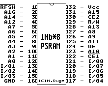
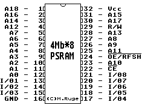

Previous
Next
TOC
Die Pinbelegung des 1Mb (131.072 Words * 8 Bit CMOS Pseudo Static
Ram, Typenbezeichnung
TC518128AFL-100) Pseudo Static Ram im STBook

Der Unterschied zum 4Mb (524.288 Words * 8 Bit CMOS Pseudo Static
Ram, Typenbezeichnung
TC518512FL-10) Chip ist deutlich, es muß also
gefädelt werden für eine Speichererweiterung auf 4 Megabyte Ram im
Atari STBook.
Achtung: Die beiden zusätzlichen Adressleitungen (A17 und A18) sind
NICHT im Platinendesign vorgesehen!

Kapitel Die Pinbelegung des Pseudo Static Ram im STBook, Seite 1